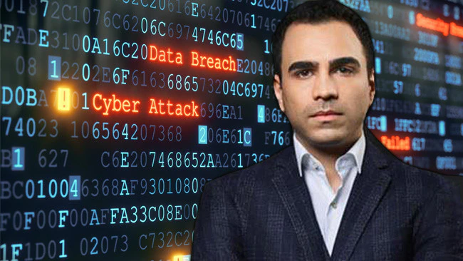

A man named Kevin Poulsen heard of a radio station contest where you could win a sports car. He ended up winning a Porsche 944 S2 by being the 102nd caller. He accomplished this feat by hacking the phone system, locking out other callers, ensuring his victory. He ended up getting sentenced to five years in prison.